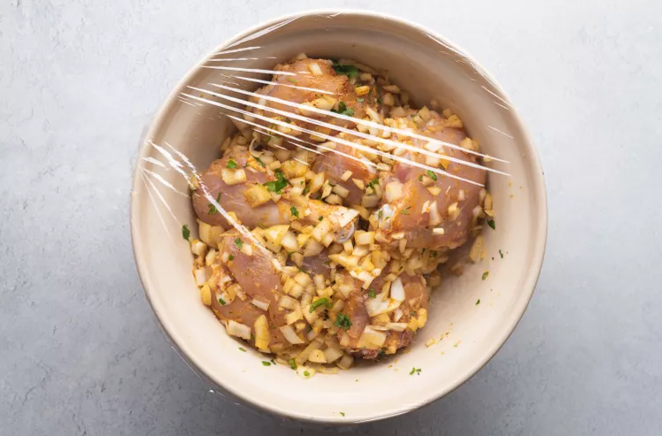

Introduction:
The Moroccan Tagine is also known as the most oldest food between the moroccan people.
You can not just visit Morocco without tasting Tagine because is so delicious, I assure you will like it.
But if you want to make it in your house by your own hands, Just follow the instructions bellow.
Prep: 25 mins
Cook: 90 mins
Marinate and Rest Time: 3 hrs 15 mins
Total: 5 hrs 10 mins
Servings: 4 to 6 servings
-------------------------------------------------------------------------------------------------
a Notice:
This recipe includes a number of traditional Moroccan ingredients.
Here's a rundown of the ingredients that might be less familiar if you don't cook Moroccan food often.
-------------------------------------------------------------------------------------------------
Important Ingredients:
Preserved lemons: Lemons preserved in salt add brightness to this dish and
you really can't replicate their pickled flavor with lemon juice or zest.
You can easily make
preserved lemons at home, or you can buy them at well stocked grocery stores,
as well as at specialty shops and
online.
Smen:
Smen is a preserved butter that has a somewhat cheesy flavor.
It's easy to make at home, although it has to sit for at least a month.
You can also buy it in specialty stores and online—
Zamouri Spices is one source.
Ras el hanout:While no two versions of the Moroccan spice blend
ras el hanout are exactly the same,
it typically includes cardamom, nutmeg, anise, mace, cinnamon, ginger, various peppers, and turmeric.
This recipe calls for a homemade ras el hanout, but you can also experiment with the blends available from various brands.
Ingredients:
1 to 2 preserved lemons, quartered and seeds removed
1 whole chicken, cut into pieces, skin removed, back discarded or reserved for another use
2 large white or yellow onions, finely chopped
2 to 3 cloves garlic, minced
1 small handful fresh cilantro, chopped
1 small handful fresh parsley, chopped
2 teaspoons powdered ginger
1 teaspoon black pepper
1 teaspoon
turmeric (or 1/4 teaspoon Moroccan yellow colorant)
1/2 teaspoon salt, or to taste
1/4 teaspoon saffron threads, crumbled, optional
1 teaspoon smen, optional
1/4 to 1/2 teaspoon ras el hanout, optional
1/3 cup olive oil
2 handfuls pitted
olives (green or red, or mixed)
1/4 cup water, approximately, if using a tagine
Steps to Make It:
- Gather the ingredients.
-------------------------------------------------------------------------------------------------
- Remove the flesh from the preserved lemons and chop the flesh finely.
Reserve rind for cooking.
-------------------------------------------------------------------------------------------------
- Add the lemon flesh to a bowl along with the chicken, onion,
garlic, cilantro, parsley, ginger, pepper, turmeric, and salt. If
using, add the saffron, ras el hanout, and smen. Mix well.
-------------------------------------------------------------------------------------------------
- If time allows, let the chicken marinate in the refrigerator for
several hours or overnight. Cook in either a tagine or in the
oven. (See below for more information on both methods.)

Cooking in a Tagine:
- Add enough of the olive oil to the tagine to coat the bottom.
-------------------------------------------------------------------------------------------------
- Arrange the marinated chicken in the tagine, flesh-side down,
and distribute the onions all around.
-------------------------------------------------------------------------------------------------
- Add the olives and reserved rind of the preserved lemons,
and drizzle the remaining olive oil over the chicken.
-------------------------------------------------------------------------------------------------
- Add the water to the tagine, cover, and place on a heat
diffuser over medium-low heat. Give the tagine time to reach
a simmer without peeking. If you don't hear the tagine
simmering within 20 minutes, slightly increase the heat, and
then use the lowest heat setting required for maintaining a
gentle—not rapid—simmer.
-------------------------------------------------------------------------------------------------
- Allow the chicken to cook undisturbed for 80 to 90 minutes,
and then turn the chicken over so it's flesh-side up. Cover
the tagine again, and allow the chicken to finish cooking until
very tender (about 45 minutes to 1 hour).
-------------------------------------------------------------------------------------------------
- Turn off the heat, and let the tagine cool for about 10 to 15
minutes before serving. Enjoy.
-------------------------------------------------------------------------------------------------